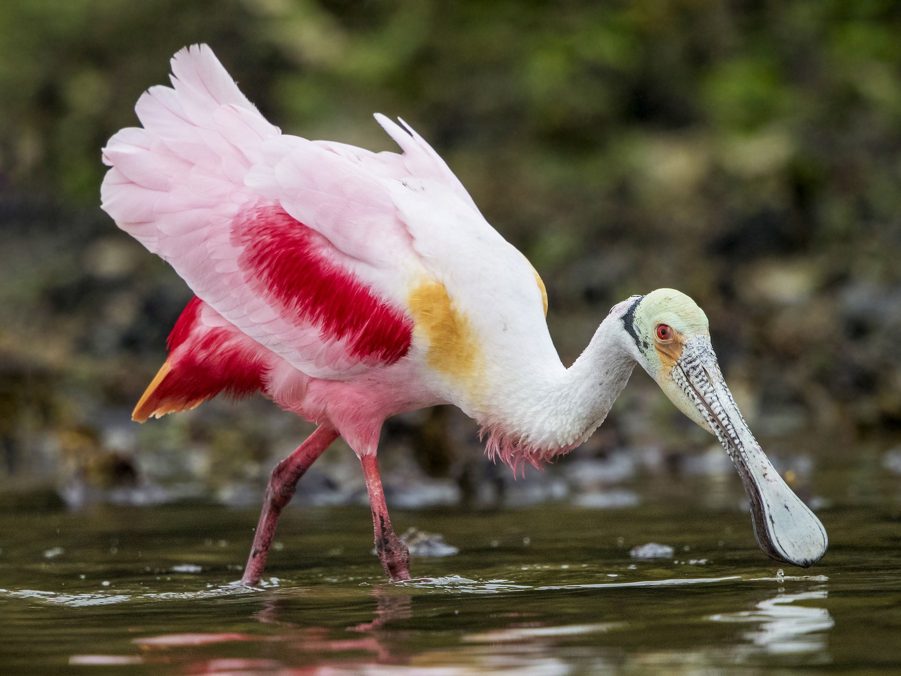
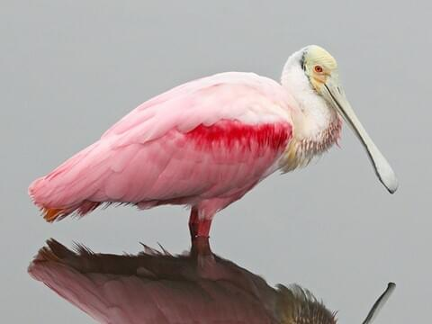
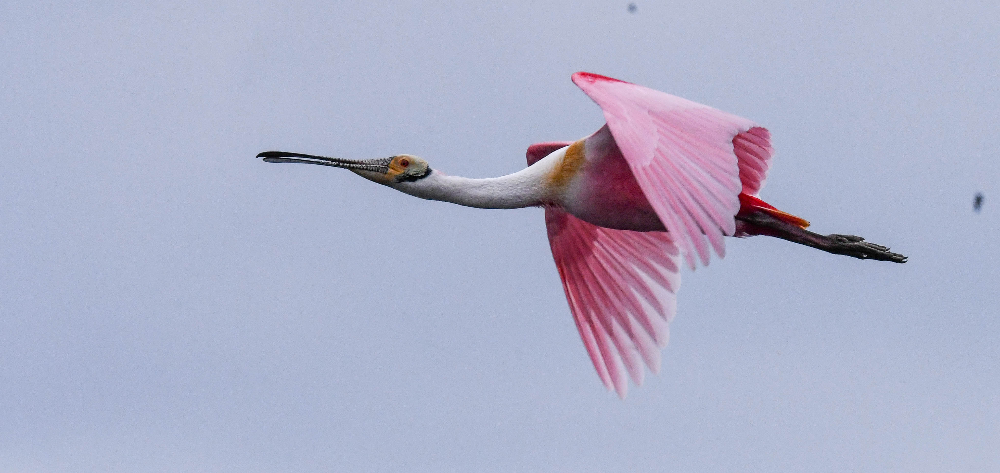
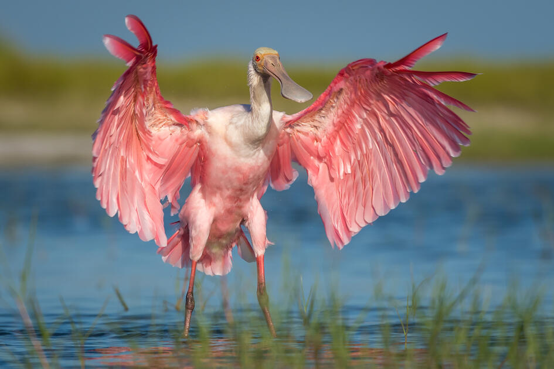
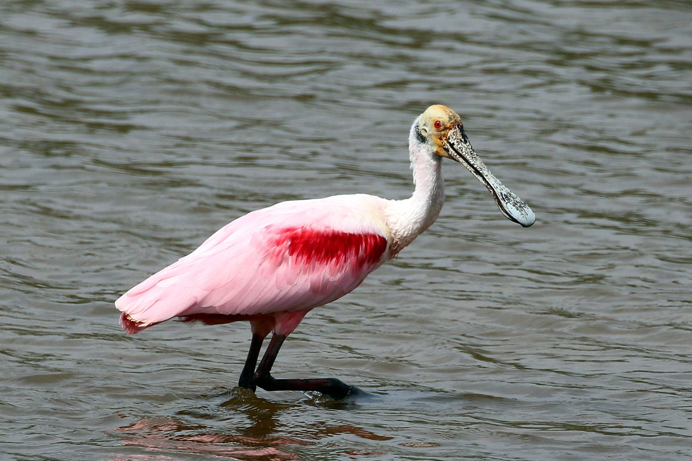

Spoonbills
Spoonbills are a genus, Platalea, of large, long-legged wading birds. The spoonbills have a global distribution, being found on every continent except Antarctica. The genus name Platalea derives from Ancient Greek and means "broad", referring to the distinctive shape of the bill. Six species are recognised, which although usually placed in a single genus have sometimes been split into three genera.
All spoonbills have large, flat, spatulate bills and feed by wading through shallow water, sweeping the partly opened bill from side to side. The moment any small aquatic creature touches the inside of the bill—an insect, crustacean, or tiny fish—it is snapped shut. Spoonbills generally prefer fresh water to salt but are found in both environments. They need to feed many hours each day.
Spoonbills are found in Vedanthangal Bird Sanctuary. Other birds such as Gargareys, Grey Wagtails, etc are also seen in Vedanthangal Bird Sanctuary.




